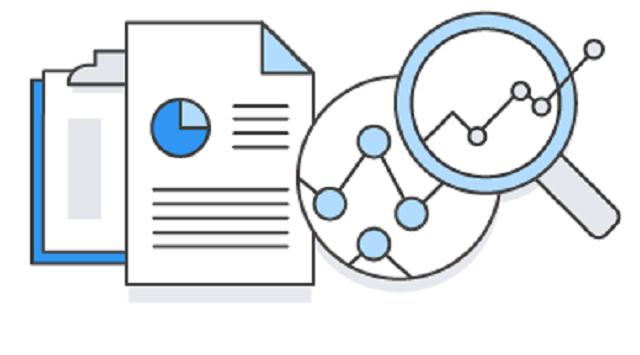

This is a highlight of my academic research, business case studies, and personal data projects.
Although the subject matter may vary the fundamental skillset and process is the same:
Answering a question through the collection, cleaning, transformation, analysis, and visualization of data.


Telling a 'story' with data through easy-to-understand visuals is an essential part of data science. I am proficient at visualizing data with Tableua, and R.

Capable of utilizing a variety of statistical models and methods including linear regression, logistic regression, Analysis of Variance (ANOVA), mediation analysis, Principle Component Analysis, Sentiment analysis and more.

Data can come from many sources. I have experience collecting data through Web-Scraping, SQL queries, and survey building.

Data isn't always in an easily digestable form. I am comfortable with cleaning, filtering, sorting, and transforming data in R and Excel.

R is my primary programming language, but I have experience in Python as well. While earning my Ph.D I taught several undergraduate classes in how to program in R.

While pursuing my Ph.D, I was able to collect and analyze real world data about politics. This process led to new scientific knowledge about human psychology and behavior.